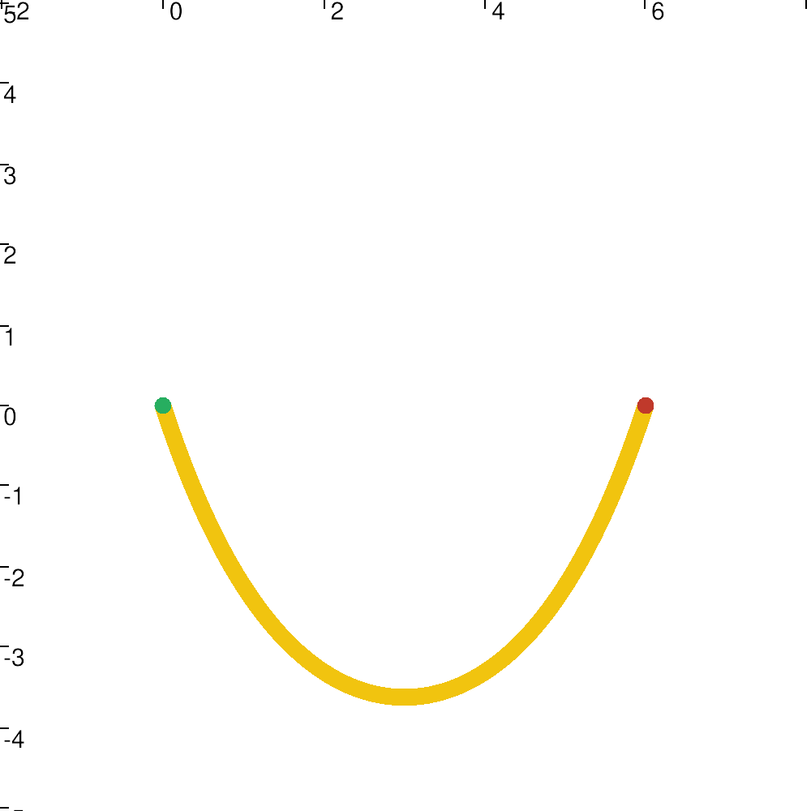

|
My Project
|
Tethers are essential in the field of underwater robotics. Indeed, they allow the transit of information and energy between different multi-marine objects. This is why it is important to know how to simulate them to understand their behavior and to be able to predict the areas in which the tether is located, to avoid navigation in these parts.
This project provide a Tether simulation to try these objects in different configuration, and to simulate forces applied to bounded objects at the tether extremities.

This repository provide an optimal contractor around a Tether based on its length and the position of its extremities. This contractor is able to contract a set enclosing the Tether which can be usefull to get an area where navigation is not possible.
To build this project you first need to install some dependencies.
The interval analysis part of this project is build using ibex-lib. Installation instructions are available here.
To visualize Intervals and boxes this project use VIBes-viewer. Installation instructions are available here.